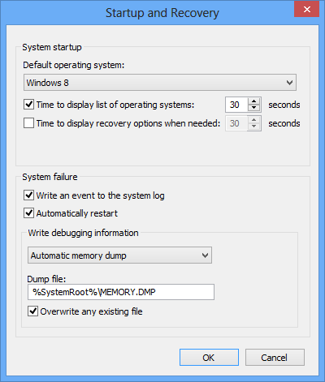

During a system crash, the Windows crash dump settings determine whether a dump file will be created, and if so, what size the dump file will be.
The Windows Control Panel controls the kernel-mode crash dump settings. Only a system administrator can modify these settings.
To change these settings, go to Control Panel > System and Security > System. Click Advanced system settings. Under Startup and Recovery, click Settings.
You will see the following dialog box:

Under Write Debugging Information, you can specify a kernel-mode dump file setting. Only one dump file can be created for any given crash. See Varieties of Kernel-Mode Dump Files for a description of different dump file settings.
You can also select or deselect the Write an event to the system log and Automatically restart options.
The settings that you select will apply to any kernel-mode dump file created by a system crash, regardless of whether the system crash was accidental or whether it was caused by the debugger. See Forcing a System Crash for details on causing a deliberate crash.
However, these settings do not affect dump files created by the .dump command. See Creating a Dump File Without a System Crash for details on using this command.
Related topics